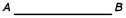
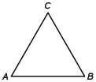

Беседа 3188 от 3877 · Беинса Дуно
Отворената врата
Сряда, 5 ч сутринта
„Отче наш“
Пишете върху темата: „Малки загуби и малки придобивки“.
Каква е разликата им? Някой път, когато се дава една тема, вие казвате: „Е, каква тема!“ Една тема се дава като една ябълчна семка, да я посадите. Вие я посаждате и тя израства. Вие носите семката, чакате я, да имате 2000–3000 семена и казвате: „Какво става с едно семе?“ Търговски разсъждавате. Казвате: „Да има човек 100, 200, 500, че да спечели нещо.“ Всички хора страдат все от печалба, но кого обират, бедните или богатите? Кого обират, болния или здравия? Болният всякога има надежда, че ще оздравее. Здравият трябва да се пази да не заболее. Сегашните добри и здрави хора имат нужда да се пазят, да не загубят това, което имат. Казва: „Какво ще изгуби човек?“ Ще изгуби младостта си. Ще изгуби здравето си, ще изгуби разположението, което има, ще изгуби онази сила, която има. Като ги изгубиш, не можеш да си обясниш защо си ги изгубил.
Казваш: „Нямам разположение.“ Като дойде някой и каже няма разположение, нищо не значи. Нямаш разположение, защо? Казва: „Нямам разположение.“ Защо? Казва: „Тъмно е в ума ми.“ Щом ти е тъмно, ти не разрешаваш нищо. Тъмно – тъмно. Казвате: „Ще му дойде времето.“ Че ще му дойде времето, да, но кога? Ще дойде времето, кога? Някога ще дойде времето. Като дойде времето, ти ще бъдеш ли готов да използуваш това време? Всички имат едно тъмно понятие за времето. Мислят, че времето е като водата, която тече, но времето за добрите хора носи светлина, благословение, за лошите – страдания, наказания. Не че самата светлина ги наказва. Като дойде светлината, разкриват се делата им. Един крадец светлината ли го наказва? Но светлината като дойде, те го хващат и го наказват. Хората го наказват.
Та, в света най-големите критици знаете ли кои са? Младите моми и младите момци. Много хубава критика има в тях. Вие идете в село, да видите критика. „Вижте! – казва. – Не знае къде да си тури китката, къде е турила.“ Критика. „Не знае да си забради чембера. Пък сукманът ѝ никак не е надиплен.“ Пък ризата му не била нашарена. Критика, критика. Младите критикуват. Пък като дойдат по-възрастните, и те почват: „Представете си, мари, представете си“ и започнат да критикуват. Започне цялото село да критикува, че сукманът ѝ не бил надиплен, както трябва, че чемберът не бил както трябва, че китката не [била] хубава.
Сега и между вас има критика. Казвате: „Не знае да мисли.“ Хубаво, в какво седи „Не знае да мисли“? В какво седи мисълта? Казвате: „Няма чувство.“ Възможно е да няма чувства, но в какво седят чувствата? Казвате: „Ти виж, лицето му погрозняло, хлътнали му очите.“ Или пък: „Очите му са изпъкнали като на жаба.“ Някой се е угоил, а за друг казват: „Какво се е сгърчил!“ Тези са основните критики. Когато се критикувате, на свят се критикувайте, като младите моми. Една мома, ако иска да […] критика, да тури китката на ухото си и нищо да не казва. Като погледнеш, казваш: „Колко е хубаво облечена, колко, колко е стройна, като свещ!“
Понеже вие сте от учените хора, ето тук имате една линия AB 
Наскоро дойде една сестра, дадох ѝ обяснения, казвам ѝ: Няма да ми носиш чужди лъжи при мене и да ми ги представяш под формата на истина. Говорил ти някой нещо, ти не си го проверила, то е цяла лъжа, ще дойдеш на мен да ми го разправяш като истина. Ти си чула нещо. Някой обещал това ще направи за Господа, онова ще направи. Това са дубари, това са лъжи. Казва: „Това ще направя“, пък нищо не прави. Казвам: Ако казва, че ще го направи, [да го направи]. Светът е пълен само с лъжи. „Аз това ще направя, аз онова ще направя.“ Аз съм слушал мнозина като казват. Дават разни обещания. Младият момък казва на момата: „Ти при мен ще бъдеш като царица.“ Едно време нямаше автомобили, с файтони ги возеха. Казва: „Ти при мене ще бъдеш облечена с коприна, прах няма да падне отгоре ти. Като дойдеш при мене, майка ми е светица, пък баща ми е светец.“ Казва: „Имаме няколко души слуги.“ Тя мисли, че вече отива в рая.
Два възгледа има в рая. В рая започнаха с два възгледа. Когато Бог дойде при Адама, казва: „В който ден ядеш от това дърво за познание на добро и на зло, ще умреш. Няма да го буташ, не яж от него, стой настрана от него.“ На другата страна на рая дойде един адепт и казва на Ева: „В който ден ядете от това дърво, като Бога ще станете.“ Адам имаше един възглед, който Бог му даде, че ако яде, ще умре. Ева друг възглед имаше – че ако яде, като Бога ще стане. Сега вие всички все по тия два възгледа вървите. Къде е погрешката? Митът е такъв. Бог казва на Адама да разправи на Ева, че тя да знае, пък той не разправи на Ева. Той казва: „Тя е дете, какво ще ѝ разправям? Тя е млада.“ После Господ му казва: „Кажи ѝ да не ходи около дървото.“ Той [си] казва: „Дете е още, има толкоз други работи, няма да иде.“ Забрави Адам да ѝ каже. Дойде черният адепт и той ѝ даде другия възглед. Мъжът нямаше инициатива, той беше занят със своята наука, понеже Адам се занимаваше със зоология, голям зоолог беше. Той е най-прочутият зоолог, който някога е съществувал на Земята. Като прекара Бог всичките животни, които съществуваха, и птици, и бръмбари, на всички Адам турил имена. Много учен човек, зоолог, всичките ги кръсти. Той ходеше, имаше работа с тях да ги изследва, че не му остана време да се разправи с Ева, че не трябва да яде от дървото. Тя си каза: „Баща ми е зоолог, аз ще стана ботаник.“ И тя се захвана с ботаниката. Тя е прочута ботаничка. Тя ходеше да се разправя с цветята.
Сега затова всичките моми отглеждат цветя и се кичат с тях. Някое момче ще хване някой бръмбар, ще го пусне да хвърка – зоолог е вече. Ще попитате: че няма ли човек с нещо друго да се занимава? Зоологията е прочута наука. Ботаниката е прочута наука. Зоологията представя цяла азбука в света. От зоологично гледище ще разбираш света по един начин, от ботанично гледище ще го разбираш по друг. То са сили, които са скрити и трябва да се изучават скритите сили. Когато се лекува някой човек, изваждат се от листата на растенията ония сокове, които лекуват. Трябва да изучава магическата сила на растенията. Запример вие имате къща и посеете дървета до къщата близо. Вие не разбирате закона на растенията. Растенията, без да искат, ще ви причинят пакост на вас. Достатъчно е вие да се изпотите и да легнете близо до корените на едно растение или до някой орех, ще видите какво има в растенията. В растенията има една жажда за вода. Те обичат водата. Те, като изтеглят водата, ще изтеглят и соковете на живота. Казвам: Никога не трябва да заспивате под сянката на растенията, защото като заспите, тогава идват всичките нещастия на човека.
Най-първо злото в света си служи с опивателни средства. Вие говорите за влюбването. Да се влюбиш в нещо е опивателно средство. Влюбването е позлатяване на един предмет. Може да се влюбиш в един предмет или може да имаш отвращение от един предмет. Да се влюбиш е заблуждение. И да имаш отвращение е заблуждение. Когато се роди отвращение от един предмет, то е окаляне, ти окаляш едно добро. Тъмните сили окалят един предмет, за [да] имаш отвращение. Следователно и в двата случая ти попадаш в едно заблуждение. [В] първия случай, когато ти се влюбиш в един предмет, ти мислиш, че като него няма в света. То [е] единственото нещо, което ти трябва. […], защото вероятността 1 на сто е вярно. След като опиташ това, в което си се влюбил. Тия неща, които ти очакваш, не седят там. Ти си се влюбил в един предмет вън от себе си, мислиш, че твоето щастие зависи от този предмет. Ти [си в] заблуждение, защото щастието не седи вън от тебе.

Сега, туй се отразява. Като се развива тялото на човека, частите стават по-големи. Ръката става по-голяма, краката стават по-големи. Очите, носът, всичко става по-голямо. Предипотопните животни са били големи. Имало е предипотопни животни, които са били по-големи от нашия слон, два пъти са били по-големи. Тия същества са имали идея, че в голямото тяло, което са имали, зависи силата им. Такова разбиране са имали.
Тази идея и сега не е изчезнала. Човек сега мисли да си направи голяма къща, да има много ниви да посее, всичките хора имат тия желания. Но трябва да разбирате в какво седи големината на човека. Закон има в природата, че всяко нещо, което притежаваш, да го употребиш на място. Ако ти имаш един ум и ти не знаеш законите на твоят ум, как да постъпваш в дадения случай; ако ти имаш едно сърце и не знаеш как да постъпваш в дадения случай със сърцето си; ако имаш едно тяло и не знаеш как да постъпваш в дадения случай, тогава ти може ли да мислиш, че си от умните хора?
Наричам умен човек оня, който знае добре да постъпва най-първо със себе си и после с другите. Човек, който не може да постъпва със себе си добре, той не може да постъпва и с другите добре. Под думите „да постъпваш със себе си добре“ разбирам съзнанието на Божественото, което е вътре в мене. Ако аз не мога да постъпя до[бре] с туй съзнание, ако него не оценявам, аз не мога да оценя нещата, които са вън от мене. Тогава Божественото и вън от мене не може да го оценя. Мислите ли, че една дъщеря, която не обича майка си, може да обича другите? Или мислите ли, че един човек, който не обича себе си, може да обича другите? Важно е, в дадения случай, аз да разбирам онова Божественото, което е внесло живота. Съзнанието, което имам, то се е родило от Божественото, което е в мене. Казвате: „Аз съм личност. Аз съм душа.“ Ти си душа, която е излязла от Бога, следователно Бог е вътре в тебе. Ако душата, която е излязла от Бога, не обичаш, как ще обичаш другите?
Сега казвате: „Тази идея е смътна.“ Но ти си се влюбил в един предмет отвън. Значи, щом си се влюбил, обичаш ли този предмет? Често ме запитват: „Защо еди-кой си не ме обича?“ Че ти [си] се влюбил сега, то е твоя работа. Защо не те обича, то е друг въпрос. Казва: „Аз го обичам, пък той не ме обича.“ Как е възможно да обичаш някого, пък той да не те обича? Може ли да не обичаш себе си? Може ли едновременно да обичаш и да не обичаш себе си? Представете си, че един човек е само една форма над тебе, ти си го обикнал, без да знаеш, че ти си сам. Представете си, че ти прави известно впечатление. Защото, щом обичаш един човек, има известно изменение. […], които са ми задали въпроса, казват: „Аз го обичам.“ А аз виждам, че той не го обича, той сам се лъже. Лицето не показва, че е на човек, който обича. Като ми каже, че обича, казвам: Чакай да ти премеря врата. Когато люби човек, има мярка, то е тайна, която не мога да поверя никому. Като премеря врата му, виждам, че той сам се лъже. Той мисли, че обича и казва, че обича. Казвам: Дай да ти премеря ръката. И там няма любов. Премеря двете ръце – и там няма никаква любов. Премеря двата крака – и там няма никаква любов. Премеря му носа – и там няма любов. Измеря устата – и там няма любов. Премеря ушите – и там няма любов. Вземам такива инструменти, измервам дебелината на космите каква е. И там няма любов. Виждам, косите са сухи, набръчкани от сухота, от суша страдат. Вие наричате красиви къдравите коси. На мнозина се запаля сърцето за къдравите коси. Ако търсиш безлюбие, ти ще го намериш в къдравите коси. Сега вие се интересувате повече от къдравите коси. Не е лошо да има човек къдрави коси.
Любовта е една мярка. Тя е. Тя е съразмерност. Мярка има, с която се измерва. Когато любовта започне да действува в човешкия организъм, частите вече стават съразмерни.
Един ден, когато хората разберат закона на любовта, частите ще бъдат съразмерни. Няма да имат тия противоречия, които сега съществуват в света. Противоречията не зависят от вас. Защо се ражда такава ревност? Като обичате някого, защо се ражда ревност? Вие не знаете произхода на ревността. Няма да ви обяснявам, но вие ревнувате да не би някой да ви измести. Че какво ще ревнувам? Но и между двама лекари има ревност, и в младата мома има ревност, и в младите момци има ревност. И в майката има ревност, и в бащите има ревност, и в слугите има ревност. Няма същество в света, в което ревността да не се проявява. Ревността наричам инерция. Като се движи един предмет, ако не знаеш закона как да спреш предмета, ще се роди ревност, една инертна сила, която може да произведе някой път цяла катастрофа.
Та казвам: Влезе ли човек в религиозния живот, човек там се занимава с човешкото сърце. Религиозните хора, като нямат знания, те си създават големи нещастия. Онзи, който се занимава с естествените науки, той се занимава с мисълта. И като не разбират законите на мисълта, то произвеждат едно нещастие. За да обичаш един човек, трябва да знаеш от какво се нуждаят неговите чувства. Всякога, когато можеш, да бъдеш полезен на един човек, на неговите чувства. Не трябва да му причиниш най-малкия ущърб. Защото в любовта щом причиниш най-малкия ущърб, ти ще изгубиш любовта, каквато вие я разбирате.
Вие сега казвате: „Как е възможно да се изгуби Божията Любов?“ Тя, Божията Любов, не се изгубва, но ако вие имате енергия, която тече по жици и ако вие бутнете и прекъснете жицата, енергията престава да тече. Не че енергията отвън се е изгубила, но енергията, която иде към вас, не тече. Като спрете тока, който ви е полезен, вие ще спрете вашата мисъл. Тогава ще се намерите в тъмно. Умът ви ще стане тъмен. Токът се прекъсва. Трябва да разбирате закона, да идете да поправите на мястото. Може вие да не сте причината, някой друг може да е дошъл и да е прекъснал този ток.
Токовете на ума и на сърцето може да се прекъсват. Те може да се прекъснат от тия лъжи, с които се занимавате. Всеки ден се занимавате с лъжи и тия лъжи ги носите във вид на истини. Каже ви някой нещо и вие, без да го проверите, го казвате като истина. Казал ви, че той не пее хубаво, че пеенето има чисто възпитателен характер. Някой казва, че момата не пее хубаво. Пък аз, като я видя, зная, че тази мома може да пее хубаво. Цветята хубаво растат. Всичко наоколо е чисто, всичко расте. Още като вляза в двора, от цветята зная, че момата пее хубаво. Някой път казват, че момата знае да пее. Виждам, листата на дърветата изсъхнали, казвам: „Тя не знае да пее.“ Вие може да познаете дали вие ще станете певец или не. Вземете няколко саксии цветя и като пеете, ако цветята растат и цъфнат, вие ще станете певец. Дали ще станете артист или цигулар, все същият закон е. Сега има други потънкости, които не искам да ви разправям. Защото вие имате една най-силна черта: всички търсите нещата наготово, тъй, завършени. Много пъти на концерт ходя. Аз, който разбирам музика, седя и слушам. Някой отворил една книга, той едва разбира от музиката и в книгата проверява тактовете как свири музикантът. Онзи музикант свири и той вижда дали взема вярно. Отбелязва си и казва: „Тук не взе хубаво, там не взе хубаво.“ Ти слушай, да остане нещо, недей гледа какво е писано там.
Какво ще вземам една книга да пише някой Слънцето как изгрява? Ще гледам Слънцето не по книгите как изгрява. Като изгрее, ще го нарисувам, ще направя едно сравнение. В музиката това са диези, за бъдещата музика дози. Лекарят като дойде, доза ще бъде. Ти имаш разстройство на стомаха си, лекарят като дойде, ще даде доза. Бъдещите лекари ще бъдат музиканти, той, като дойде, ще изпее три тона. Кои са, няма да ви ги кажа. И като изпее тия трите тона, веднага чувството коремоболие ще изчезне. Имате някаква тежест на сърцето – дойде, изпее други три тона. Тогава ще изпее една кварта. Веднага всичката тежест на сърцето ви ще изчезне. Някой предмет не може да разберете. Той ще дойде и ще изпее една квинта по един начин и веднага ще дойде светлината във вашия ум. Лесно ще стават работите. Сега мнозина от вас кварти пеете, квинти пеете, но това е механическата страна на музиката. И аз може да премеря един плат, но онзи, който шие дрехите, като премери, знае. И аз може да измеря на някой човек да му ушия дреха. Не разбирам каква дреха ще му направя.
Аз привеждам един пример в първите си беседи за един българин. Най-първо, той ходил като градинар към Солун. Това е един анекдот. В турско време било. Три–четири години работил, излизали пришки на ръцете му и казва: „Тежък е този живот.“ Един ден ходи в Солун, търсил да се хване на работа, чирак да му стане. Гледа един абаджия, от старомодните абаджии. Седи и работи в дюкяна си. „Искам да науча този занаят, вижда ми се лек, с иглата се шие.“ – „Добре.“ Господарят дал му една игла и той започнал да шие. Казва: „Туй разбирам човек да си почине, само с игла да шие, без конец.“ После турят конец, седял две седмици, започнал да изкарва и конеца. Господарят му бил прочут. Дохожда един турски бей, искал да му ушие един бирбучуклия. Господарят знае да шие. Чиракът е бил голям, на 21 година. Дава му ножици, аршин и го изпраща при бея. И казва, че той ще отиде след него. Но случва му се работа, закъснява, не дохожда навреме. Анекдотът е такъв. Беят, като го гледа, харесал му чиракът и му казва: „Ти ми се виждаш майстор. Тъй, както те гледам, имаш вид, разбираш що е занаят.“ Чиракът не казва, че отскоро работи, от две седмици, а казва: „Може.“ – „[Можеш] ли ти да ми ушиеш бирбучуклията?“ Беят изважда един топ сукно. Чиракът започна да мери. Рязал, рязал… Гледа го беят и казва: „То бирбучуклия няма да стане, ами направи ми салтамарка.“ Той пак мерил, мерил, рязал. „Виждам, – казва – синко, умът ти е на друго място. Като си изучил занаята, за момите си мислил, но я поне една тютюнева кесия да ми направиш. И ако не можеш да ми направиш една тютюнева кесия, ще те набия вече!“
Та, и вие сега имате занаят и не сте го изучили и като влезете, режете, кроите на общо основание. Бирбучуклия не става, салтамарка не става и остава тютюневата кесия. Това не е занаят. Както гледам всинца ви, поне трябва да имате знанието. Дойде ви едно неразположение. Имате една мисъл, която ви мъчи. Тази мисъл, която тежи, да знаете как да се освободите от нея. Вие обикаляте цялата махала, разправяте, че ви е мъчно. Казват: „Какво имаш на лицето, като че не си разположен?“ Казва: „Случи ми се нещо.“ – „Какво се случи?“ Случило се нещо. Че, какво се случило? Че яденето било малко пресолено, снахата пресолила яденето, не знае как да соли. Снахата пресолила яденето и тръгна да разправя свекървата: снаха ѝ пресолила яденето, снаха ѝ пресолила яденето. Всички чуха, че свекървата говори, че снахата пресолила яденето. Втори път тя се поправи: много малко сол турила. Толкоз малко, че яденето останало несолено. Пак свекървата разправя: „Представете си, безсолно направила яденето!“ И пак ходи по махалата да разправя, че е безсолно яденето.
За мене, ако бобът е пресолен, ще му налея едно кило вода и ще оправя работата. Ако е безсолно, аз ще го осоля. А свекървата разправя: „Представете си, нашата снаха не знае как да соли!“ Ако турила повече сол – много сол турила, лошо. Ако тури малко сол, пак лошо. Питам сега: Какво да прави снахата? Аз ако бях снаха, като варя боб, няма да [му] туря никаква сол. Ще кажа: „Правете. Мога да сваря боб, то е моя работа. Но да го соля, то е ваша работа.“ Аз може да сваря боба, а вие ще го солите. Вие ще носите отговорността. Солен или несолен, то не е моя работа. Казвам сега: Като варите боб, не го солете. Едно правило.
Сега, някой път чувствата са пресолени, умът е безсолен. Някъде умът може да е пресолен, а сърцето да е обезсолено.
Та казвам: Ако солта се изгуби, то е процес на мисленето; процесът на осоляването е процес на чувствуване. Ако ти не можеш да мислиш правилно, твоят ум не може да се осоли. Процесът на мисленето е процес на осоляване. Следователно да осолиш един предмет, то значи той да се прояви в своята красота. Да обичаш някого, то е осоляване. Трябва да знаеш как да обичаш. Цяла наука е да знаеш този човек как да го обичаш.
Вие забелязали ли сте как започвате във вашата любов? Сега сте минали цяла школа на любовта. Като погледне булката, наведе очите надолу – пресолено е яденето. Щом гледаш надолу, то е законът на растенията. Главата им е заровена в земята. На тия растения, защо главите им са надолу? Когато растенията дойдоха на Земята, Северният полюс на друго място беше. И растенията показват къде е бил Северният полюс. Той е бил долу. Там е била и човешката глава, заровена долу в материята. Сега е точно обратното. Главата му е перпендикулярна, в обратна посока. Северният полюс сега е в друга посока. Когато се явили животните, тия млекопитающите, полюсът е бил към изток, дето е нашият изток, там е бил полюсът.
Та казвам: Растенията показват къде е бил Северният полюс, когато са дошли растенията. Когато са дошли животните, то е бил към нашия изток, а когато е дошъл човекът, той е дошъл най-после, той е там, където е сега полюсът. Съгрешаването на човека се дължи на изместването на земната ос на 23 градуса. Това е човешкото падение. То е падение вътре във вас. На 23 градуса е отдалечена вашата ос от правата посока, от правата посока на любовта. И понеже лъчите на любовта в човешката душа не идат правилно, следствие на това има един дисонанс в човека. Земята е отдалечена – не е погрешка това. Погрешката е вътре в [нас].
Та казвам: За бъдеще нашата ос, в която се движим във физическият свят, трябва да бъде перпендикулярна спрямо Божественото слънце, около което ние се движим. Всички вие трябва да изправите вашата ос. И тогава Писанието казва: „Роденият от Бога грях не прави.“ На родения от Бога оста му е изправена. Нероденият от Бога – оста му е изкривена. Мислите ли, да кажем, вие предете, как въртите вретеното? Като предете, това вретено се върти отляво надясно. Отвесно се движи, не настрана.
Та казвам: Ние можем да извадим една хубава мисъл в себе си. Ако твоята ос е изкривена, значи ако отношенията между твоето сърце…, ако няма едно отвесно положение към центъра, т.е. под думата „отвесно“ разбираме едно хармонично съчетание със законите, които съществуват в света. Вие всички търсите помощ. Болният човек ако отиде при някой болен, може ли да му помогне? Защото и да иска болният да му помогне, в него няма тази сила на здравето. Ако отидеш при болния, трябва да бъдеш здрав. Единственото нещо, което помага на хората – при болните трябва да ходят здравите хора. Здравият човек като иде при болния, той лекува. От него излиза тази магнетична сила. Онези здравите хора имат една приятна топлина. Онези хора, които не са здрави, имат една особена студенина. Щом пръстите на краката започват за изстиват, кръвообращението не става правилно. В дадения случай това показва, че твоята симпатична нервна система не функционира правилно, щом краката ти изстиват. Пръстите показват, че мозъчната система не функционира, няма хармония.
Вие може да направите някои опити. Ако хармонирате сърцето си, ако хармонирате ума си, веднага ще се стоплят ръцете ви. За някой човек вие имате лошо мнение, ваш близък. Ако имате, запример, лошо мнение за баща си, непременно пръстите на ръцете ви изстиват. Ако имате лошо разположение към майка си, пръстите на краката ви долу изстиват. Изправете отношението към баща си – веднага ще започнат да се стоплят пръстите на ръцете ви. Изправете отношението към майка си и краката ви долу ще се стоплят. Туй показва, че майка ви и баща ви започват да функционират.
Когато аз говоря, че хората трябва да се обичат, разбирам: трябва да обичате близките хора, за да се подобри кръвообращението ви. Кръвообращението, туй движение, показва правата мисъл, правите чувства, които образуват кръгово движение, което е необходимо за здравето. Образува туй движение вътре в артериалната и венозната система. Образува движение на човешката мисъл, която трябва да мине през цялото тяло. Една мисъл трябва да мине през всичките клетки на тялото. Едно чувство трябва да мине през всичките клетки. Този процес и в най-малките частици, и в ума, той трябва да проникне. Следователно, когато мисълта минава без никакво съпротивление по цялото тяло, човек става здрав. Когато неговите чувства минават по цялото тяло, той е здрав. Когато само през известни части минават, тогава е частично здрав.
Казвам: Когато говорим за Бога, ние разбираме тази вътрешна хармония, от която нашият ум се нуждае. Да обичаме Бога, разбирам да обичаме Неговия Дух, да се образува този кръговъртеж в нас, да чувствуваме присъствието на Бога. Да чувствуваме всичко онова, което Той е създал и да ни е обично заради Него. Да обичаме всичко онова, което съществува.
Та казвам сега: От A до B, вие мислите да изходите този път. Вие тръгнете. Какво представя в дадения случай C? C е Божествената Любов, към която човек трябва да се стреми. Мъжът и жената трябва да се стремят към C. Това е Божествената Любов, т.е., ако мъжът се стреми към C и ако жената се стреми към A, никакъв резултат няма да има. Ако B се стреми към C и ако A се стреми към C, имате вече резултат.
Този закон се проявява, когато клоните се стремят към центъра, когато едно дърво расте. Кой е центърът, към който се стремят? Плодът. C в дадения случай е плод, който се ражда в едно дърво. Корените имат стремеж към C и клоните имат стремеж към C, следователно такова дърво ни е приятно. Онези дървета, които нямат плод, считаме безплодни. Те нямат стремеж към C, те не са обичани. Ако във вашият ум не може да дойде плодът, вие сте безплодни. И ако вашето сърце плод не дава, вие сте безплодни. Любовта не съществува в този […] стремеж. Когато стремежът е правилен, плодът ще дойде. Не само да има плод, но да има качество на плод[овете].
Значи умът ви трябва да даде най-хубавите плодове, сърцето ви трябва да даде най-хубавите плодове. От това зависи качеството, от това зависи бъдещето.
Като кажем някой път: „Не се занимавай с другите хора“, то е: погрешките на другите хора нищо няма да ни ползуват. Питам сега: Свекървата, която казва, че снахата пресолила боба, какво се ползува? Каква е целта? Свекървата няма любов към снахата, нищо повече. Туй показва, когато пресолила боба или ако малко е турила и оставила боба безсолен. Каква погрешка има в това? Тя има сол, солта е в нейните ръце. Да тури. Ако има много сол и ако аз бях на мястото на свекървата, ето какво щях да направя. Щом снахата е пресолила боба, аз ще взема друг боб. Ще го туря в гърнето, ще го варя и [не] ще го пресоля. И ще кажа: Пресоления боб ще го оставя за мене. А новия боб, който ще сваря, този боб, ще кажа, е на снахите. Аз да кажа каква свекърва съм. Аз ще взема нейната погрешка.
Дойде някой и ти се оплаква. Аз ще ви приведа един пример. Аз имам двама приятели. Единият беше наш брат, той беше адвокат. Замина си той. А другият беше един евангелски проповедник. Отивам при адвоката и заварвам там двамата, заявление правят, казват, че един млад момък взел 100 лева от нашия приятел и обещал на проповедника брашно да му купи, но го излъгал. И двамата се съгласили да го дадат под съд. Това беше в 14-та година, във време на войната. Рекох: „Този момък иска да се жени. Трябвали му пари за младата булка. Искал някой брашно, но момата дошла, тя развалила брашното. Парите тя изяла. Вие сега ще идете да го съдите. После ще го карате да се кълне. Ще направите една погрешка.“ Казвам: „Колко ти дължи?“ Проповедникът казва: „За 25 лева.“ Изваждам и давам 25 лева. Изваждам и давам 100 лева на нашия брат. Казвам: „Аз плащам заради него. Имам да му давам. Младият момък, той ми направи една работа, че аз плащам. Считайте, рекох, че въпросът е разрешен. Един ден, ако той дойде и ви даде парите, тогава може да ми дадете парите.“ Като извадих да дам на брата парите, той казва: „Аз не искам.“ Аз взимам соления боб за себе си. Аз направих този пример за 25 лева. Казвам ви го на вас: Струва ми 25 лева. Братът се отказва – не иска парите. Веднага примирихме се. И тия двамата бяха щастливи, че не го дадоха под съд. Аз, свекървата, ако бях ходил да разправям, че не е осолен бобът… Аз направих един безсолен боб, пък аз взех соления боб за себе си. Сега на вас представям […] казвам соленият боб, понеже вие сте много умни. На вас казвам: Турете малко вода.
Стремеж към всинца ви трябва да има към онова Божественото. Всякога се спирайте във вас да направите една малка жертва, не от страх. Човек има много неприятели в Невидимият свят. Ние сме изложени, както растенията, на разни бури, на разни насекоми, гъсеници, много неприятели имаме. Тия растения сами не може да си помогнат. Някой човек е тъй безпомощен към окръжаващата среда, и него може да изядат, както гъсениците дървото. Трябва да дойде някое разумно същество да ги освободи от гъсеници.
Казвам: Мнозина от вас имат такива гъсеници, които изпоядат най-хубавото, което имате в себе си. Ако вие обърнете ума си и сърцето си към Бога, онези, които ви обичат от Невидимият свят тогава ще ви помогнат.
Писанието казва: „Той изпраща духовете Си да помагат на онези, които ще наследят Царството Божие.“ Понеже вие сте определени да наследите Царството Божие, затова постоянно трябва да отправяте сърцето си и ума си към Бога, за да бъде този път отворен, да слизат отгоре да ви помагат. Затова казвам: Не затваряйте ума си, не затваряйте сърцето си за Божественият Дух, Който работи във вас. Да не затваряш, да любиш, значи вратата ти постоянно да бъде отворена за Бога.
Като говорим за Любовта, разбирам отворената врата, през която Божествените сили ще дойдат, ще ни помогнат да се повдигнем. В края на краищата всичко онова, което искаме, ще постигнем. С любов всичко можем да постигнем. Не в един ден, но в живота, който трябва да прекараме на Земята, ще се постигне. Има много хубави работи, които може да се постигнат. Хубави и красиви работи може да се постигнат. Туй, което опитваме, туй, което остава в нас, то е реалното. Онова, което не сме опитали, онова, което не е в нас, не е реално.
Когато говоря за Любовта, аз разбирам същинските плодове на живота, които са родени от дървото на живота. Не разбирам гипсови ябълки и плодове. Когато говоря за хората, има хора, направени от гипс – за тях не говоря. Говоря за хора, които Бог е направил, в които е Божественият живот. Обичайте тях.
„Добрата молитва“
XIX година (1939–1940)
29-а лекция на Общия окултен клас,
държана от Учителя на 17 април 1940 г.,
София – Изгрев.